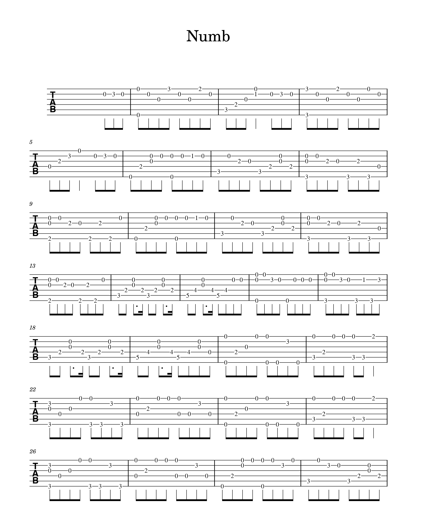
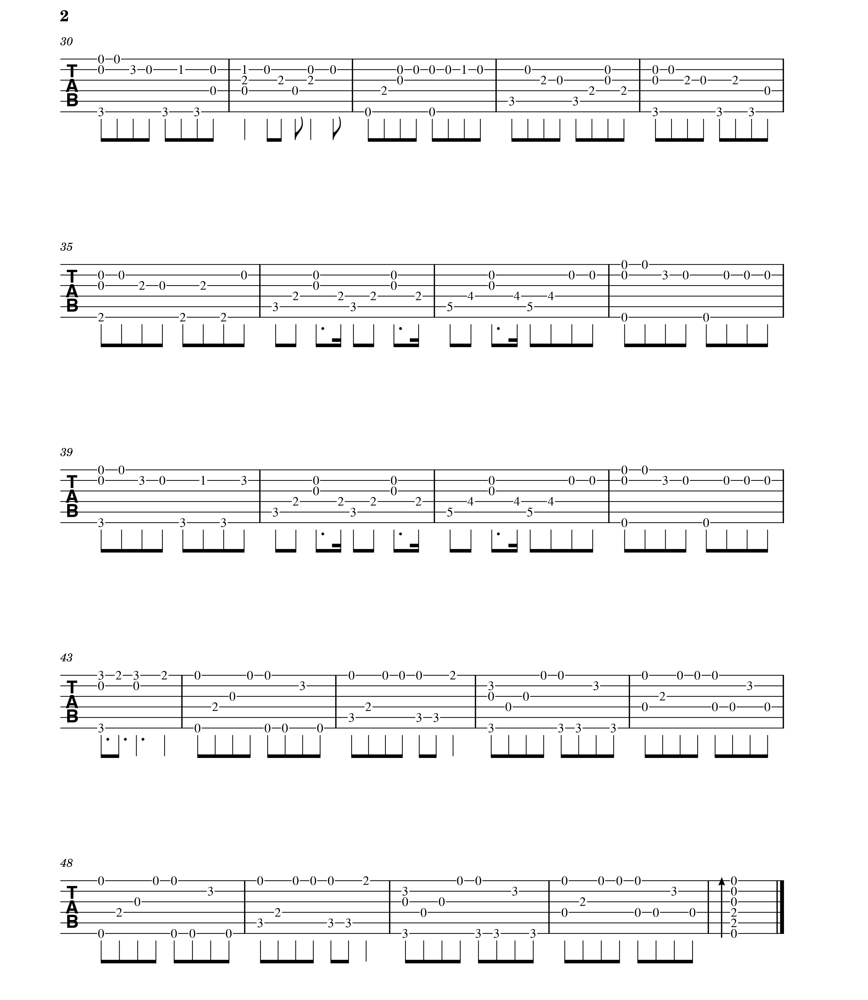

В подглаве «Базовые навыки» были разобраны композиции, большая часть которых игралась с боем, в этой подглаве бой использоваться практически не будет. Главный приоритет в продолжительном обучении игре на гитаре – не останавливаться и развивать технику игры.
Ссылка на кавер «Numb» - https://youtu.be/cw5bEWYh6f4
Самое главное при обучении композиции не спешить, каждый день можно выучивать по строчке. Вы сможете заметить повторяющиеся части. В некоторых моментах можно будет использовать постановку аккорда (аккорд C в третьем такте). Держите ноту как можно дольше для большей красоты и целостности, отпускайте палец только тогда, когда вам нужно будет переставить его на другое место. Так, в четвертом такте на третьем ладу шестой струны держите средний палец до следующего такта. Перед тем как изучать следующий пункт выучите композицию так, чтобы не происходило больших задержек между извлечениями нот. Процесс обучения игре какой-либо композиции продолжительный.
 